This manual covers the ZXMODE screen modes and ZXPAL palettes in
zx scr. It takes one photograph to a Spectrum screen in
each palette, measures the results the way the ZXMODE specification
measures them, and then moves on to loaded registers, assets that cross
palettes, better encodings and palette design. It doesn't repeat the
full flag reference, which is in the CLI
manual.
Classic .scr screens, sprite sheets and asset
collections are covered in the sprite
handling manual. The commands are the same ones; this manual is
about what the new modes and palettes add.
The examples use Chateau de Chillon and Dents du Midi by Giles Laurent, a photograph of the castle on Lake Geneva at dusk, under the snow-covered Dents du Midi. It is one of the specification's evaluation pictures, and among the 22 colour pictures it scores consistently near the top in every palette. It is licensed under CC BY-SA 4.0, and the encoded pictures in this manual are adaptations of it, shared under the same licence. The original is on Wikimedia Commons.
The specification's tools/fetch_pictures.py downloads it
as pictures/f06.jpg, with the other 25 evaluation pictures
and a sources.csv of their authors and licences. Copy it
into a working folder as chillon.jpg to follow along.
ZXMODE adds two linear screen modes to the classic one, and ZXPAL adds five palettes. The mode fixes the size and layout. The palette fixes how many colours there are and how a cell's attribute names them.
| Mode | Picture | File |
|---|---|---|
| ZXMODE0 | 256x192, the classic interleaved layout | .scr |
| ZXMODE1 | 256x192, linear | .zm1 |
| ZXMODE2 | 512x384, linear, two half-screen pages | .zm2 |
| Palette | Colours | Attribute |
|---|---|---|
| ZXPAL0 | the 16 Spectrum colours | one byte, as the classic one |
| ZXPAL1 | the Spectrum colours and 16 greys, in four banks of 8 | one byte; bits 7-6 pick the bank |
| ZXPAL2 | the eight colours at four levels | one byte; bits 7-6 pick the level |
| ZXPAL3 | 64: twelve hues and four greys at four levels | two bytes: an ink register and a paper register |
| ZXPAL4 | 112: ZXPAL3 plus tones, tints and shades | two bytes, as ZXPAL3 |
Every 8x8 cell still has one ink and one paper colour. With a one-byte palette both come from the same bank; with a two-byte palette each can be any register. ZXMODE0 takes the one-byte palettes only.
A screen file holds pixels and attributes and nothing else, so it
does not record its palette. Every command that reads a screen takes
--palette (and --mode, which defaults from the
extension). zx info tells you which palettes a file's size
fits. For the ZXPAL4 screen made below:
$ zx info chillon4.zm2
chillon4.zm2: ZXMODE2 picture, 512x384, 30720 bytes
two half-screen pages of 15360 bytes (rows 0-191, then 192-383)
two attribute bytes per cell (ink, then paper planes): ZXPAL3 or ZXPAL4
the palette is not recorded in the file: decode with -palette (and -registers for loaded registers)A photograph is rarely 512x384, so the first step is fitting it.
zx scr fit writes the fitted picture as PNG, so you can
look at it before encoding and compare encodings against it
afterwards:
zx scr fit chillon.jpg --resize fill --filter lanczos -o chillon-fit.png--resize fill scales the picture to cover 512x384 and
crops what overflows. The other modes are stretch,
bestfit and centre.--filter lanczos uses Pillow's Lanczos resampler. With
--resize fill, this is the specification's own fit: it
gives the same bytes as the specification's tools from the same
pixels.--trim n removes n pixels from every edge first, for a
scan with a dark margin. The specification trims 24 from its Turner
painting.--centering x,y moves the crop, each value from 0 to 1.
The default, 0.5,0.5, centres it. The specification uses 0.5,0.7 for its
watermelon picture, for example, to keep the fruit in frame.--grey converts the fitted picture to grey with the
ITU-R 601 weights, as the specification does for its grey tests.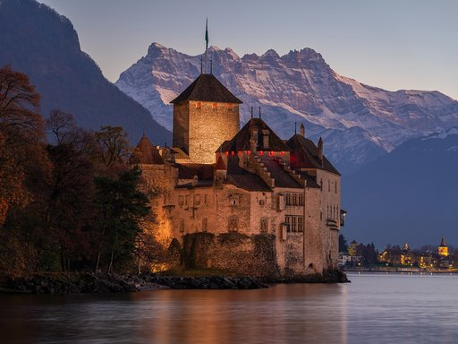
The fitted picture, the reference every encoding below is measured against.
zx scr encode takes the same flags, so you can fit and
encode in one step. Fitting separately pays off when you encode the same
picture several times, or want the fitted picture to compare
against.
A JPEG source decodes to within a level or so of what Pillow sees:
zx rebuilds JPEG colour with libjpeg-turbo's chroma
interpolation. The remaining differences come from the two decoders'
inverse DCTs.
--mode and --palette select the
specification's reference encoder. For each 8x8 cell, it tries every
pair of colours the attribute can name and keeps the pair whose span
covers the cell's pixels best. It then dithers between the two colours
in linear light, against an 8x8 Bayer matrix. Its output is the
specification's own, pixel for pixel.
zx scr encode chillon-fit.png --mode zxmode2 --palette zxpal0 -o chillon0.zm2
zx scr encode chillon-fit.png --mode zxmode2 --palette zxpal4 -o chillon4.zm2
zx scr decode chillon4.zm2 --palette zxpal4 -o chillon4.png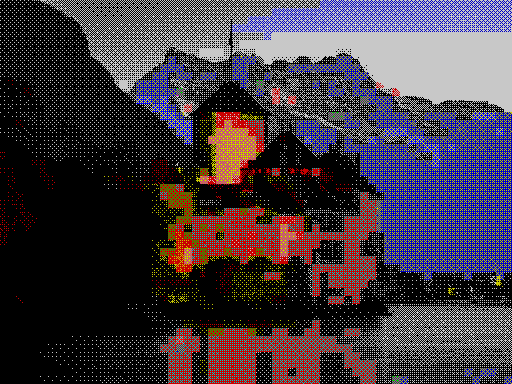
ZXPAL0, the classic colours at 512x384. Each 8x8 cell has two colours from eight hues, so the dusk blues come out as cyan and the warm stone as yellow and red.
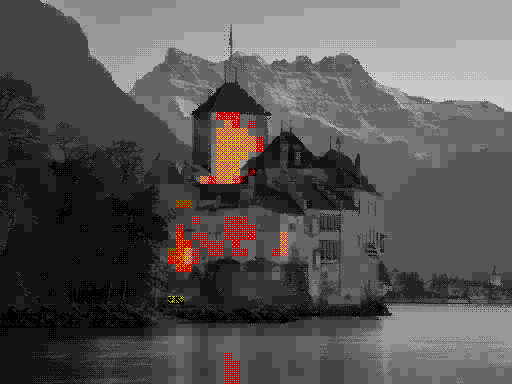
ZXPAL1. Its grey banks carry the mountains, sky and lake; the colour is left to the eight Spectrum hues, on the castle alone.
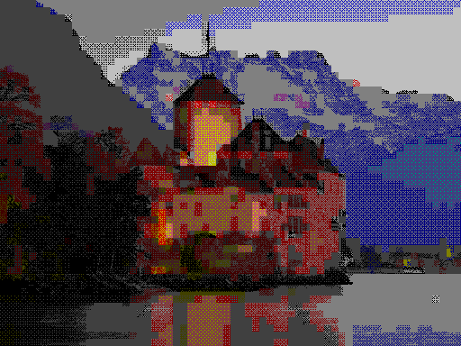
ZXPAL2. The darker levels give the shadows a colour, but every colour is still one of the eight hues.
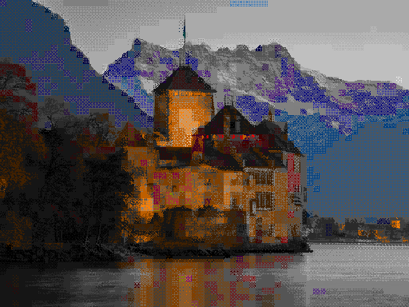
ZXPAL3. With twelve hues and two independent registers per cell, orange and azure appear for the first time.
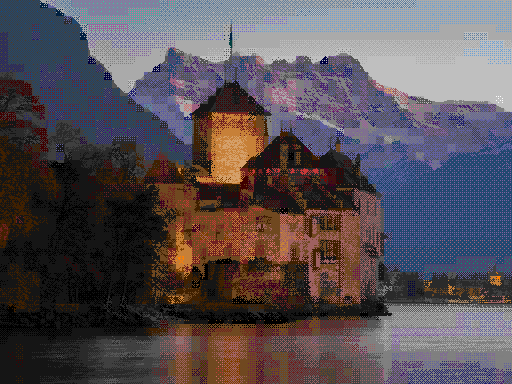
ZXPAL4. The tones and tints add the muted colours of the dusk light.
The two-byte palettes cost more memory: 30720 bytes for a ZXMODE2 screen instead of 27648. They also take longer to encode. ZXPAL4 has nearly 6000 pairs to try per cell, and takes two to three seconds a screen.
zx scr compare counts the pixels where two pictures
differ. That is the right check for "did this come out identical?", but
it says nothing useful about how good a dithered picture is.
--metric gives the specification's measures instead:
$ zx scr compare --metric all chillon-fit.png chillon4.zm2 --palette zxpal4
error (blur 1.5) 7.0337
lighter-blur error (blur 0.75) 9.5684
rms error 22.9110
SSIM 0.4147| Metric | What it measures |
|---|---|
blur |
The specification's error: the RMS difference (0-255) after a Gaussian blur of 1.5 pixels on each channel. The blur stands in for the eye merging a dither at viewing distance, so a well-dithered colour scores as the colour it averages to. |
light |
The same with a blur of 0.75, which keeps more fine detail. |
blur=<sigma> |
Any other blur. |
rms |
No blur, so every dither dot counts as an error. |
ssim |
Structural similarity, computed as scikit-image computes it. |
All of them match the specification's Python tools to many decimal places. The Chillon picture in each palette:
| Palette | blur |
light |
ssim |
the specification's blur |
|---|---|---|---|---|
| ZXPAL0 | 32.72 | 37.02 | 0.103 | 32.73 |
| ZXPAL1 | 16.34 | 17.71 | 0.633 | 16.35 |
| ZXPAL2 | 17.89 | 20.90 | 0.366 | 17.89 |
| ZXPAL3 | 10.72 | 13.25 | 0.415 | 10.73 |
| ZXPAL4 | 7.03 | 9.57 | 0.415 | 7.04 |
The last column comes from the specification's
data/results_by_palette.csv. The small differences come
from JPEG decoding, described under reproducing the
specification's results.
SSIM ranks ZXPAL1 above ZXPAL4, although ZXPAL4 is plainly the closer picture. SSIM rewards matching local contrast and structure, and ZXPAL1's smooth greys match the photograph's light and dark well while getting most of its colour wrong. The blurred error measures colour as well, and is the one the specification's conclusions rest on. Use both when you compare encoders, and look at the pictures.
Either side of compare can be a screen file. A 256x192
picture is doubled to compare it with a 512x384 one, as ZXMODE1 appears
on the ZXMODE2 raster.
ZXPAL's palette registers are loadable (Part 5 of the specification).
A program can overwrite them, and the same screen bytes then show other
colours. --registers file.csv tells zx which
colours a screen is meant for, when encoding, decoding, and in every
other command that reads a screen.
zx scr palette writes a palette's reset values as a
starting point:
$ zx scr palette zxpal2
ZXPAL2: 32 registers, attribute one byte
0 000000 0 0 0
1 000040 0 0 64
2 400000 64 0 0
...
zx scr palette zxpal2 -o zxpal2.csvThe CSV has a header and one row per register:
register,hex,r,g,b. Edit the colours and keep the register
numbers. As an example, here is ZXPAL2 with each register replaced by a
sepia tone of the same brightness (its ITU-R 601 luminance times 1.08,
0.86 and 0.62 for red, green and blue), the kind of palette a game might
load for a flashback:
zx scr encode chillon-fit.png --mode zxmode2 --palette zxpal2 --registers sepia.csv -o sepia.zm2
zx scr decode sepia.zm2 --palette zxpal2 --registers sepia.csv -o sepia.png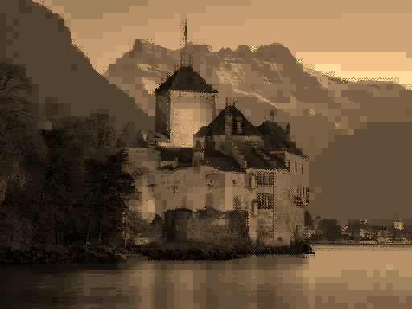
Encoded for the sepia registers. The encoder chooses among the colours the registers will show, so the dusk blues become the nearest sepia tones.
The same sepia.zm2 decoded without
--registers shows the reset colours, and looks wrong. The
file doesn't know which colours it was encoded for, so keep the register
table with it. A ZCUT collection does keep it (see the next section).
The specification's data/zxpalN_registers.csv files read as
register tables as they are.
cut, paste, flip and
convert work on ZXMODE screens in any palette. A ZCUT
.cut collection records each attributed asset's palette,
which fixes how its attributes are stored. When an asset was cut from a
screen with loaded registers, the collection also records its register
table.
| ZCUT version | Holds |
|---|---|
| 1 | ZXPAL0 assets only, the original format |
| 2 | adds each asset's palette, and two-byte attributes for ZXPAL3 and ZXPAL4 |
| 3 | adds a register table per asset |
A collection is written at the lowest version that holds it, so collections of classic assets stay version 1.
Cut the castle's keep from the ZXPAL4 screen, mirror it, and paste both copies into a classic screen:
$ zx scr cut chillon4.zm2 --palette zxpal4 --cells 23,2,12,22 --name keep -o parts.cut
cut "keep" (96x176, color ZXPAL4) -> parts.cut [1 assets]
$ zx scr flip parts.cut --name keep -h -o mirrored.cut
$ zx scr paste parts.cut:keep blank.scr --at 24,8 --op copy -o scene.scr
pasted "keep" at 24,8 -> scene.scr (attributes converted from ZXPAL4 to ZXPAL0)
$ zx scr paste mirrored.cut:keep scene.scr --at 136,8 --op copyHere blank.scr is any classic screen, in this case 6912
zero bytes (head -c 6912 /dev/zero > blank.scr).
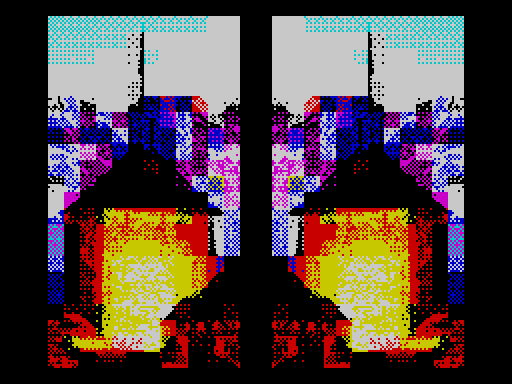
The keep, converted to ZXPAL0 and pasted twice (shown at double size). The conversion maps each cell's two ZXPAL4 colours to the nearest Spectrum pair, so the dusk light turns into bright primaries.
When an asset's palette or registers differ from the target screen's,
paste converts the attributes and says so. Conversion keeps
the bitmap exactly. Each cell takes the target colours nearest to its
own ink and paper, weighted by how many of the cell's pixels each one
covers. In a one-byte palette, ink and paper must share a bank, so the
best bank wins. A colour the target holds exactly is kept exactly. Flash
survives only from ZXPAL0 to ZXPAL0.
zx scr convert does the same conversion on its own, for
a collection, one asset (--name) or a whole screen.
--to-mode can also move a screen between ZXMODE0 and
ZXMODE1, which are the same size.
zx scr convert parts.cut --to zxpal1 -o parts1.cut
zx scr convert chillon4.zm2 --palette zxpal4 --to zxpal0 -o chillon4-as-0.zm2Converting is not re-encoding. The bitmap was dithered for ZXPAL4's colours, and a cell can only swap its two colours for others. Converting the ZXPAL4 Chillon to ZXPAL0 scores 45.13, against 32.72 for encoding the picture in ZXPAL0 directly. Convert assets when the picture is gone, or when the pixels must stay as drawn. Re-encode when you still have the source picture.
zx scr ocr reads text from ZXMODE screens as well as
classic ones. A classic .scr in ZXPAL0 is read by colour,
as before. A .zm1 or .zm2 is read from its
bitmap: 24 lines of 32 characters in ZXMODE1, and 48 of 64 in ZXMODE2. A
cell with more ink than paper is read inverted, so inverse video reads
too. A classic text screen converted to ZXMODE1 reads the same as the
original:
zx scr convert text.scr --to zxpal0 --to-mode zxmode1 -o text.zm1
zx scr ocr text.zm1zx scr crop --auto finds the box around a screen's set
bitmap bits, whatever the mode:
$ zx scr crop scene.scr --auto -o keeps.png
wrote keeps.png (208x176 at 24,8)Part 4 of the specification lists ways an encoder might improve on
the reference one, untested there. zx has three of them as
options. Each leaves the reference encoder, so the output is no longer
the specification's picture.
| Flag | Effect |
|---|---|
--diffuse f |
Spreads each cell's colour error, times f (0 to 1), into the cells not yet encoded, as Floyd-Steinberg spreads a pixel's error. The encoder then runs on one CPU. |
--flat n |
Fills cells whose pixels vary less than n with a single colour instead of a dither. |
--linear-pairs |
Chooses each cell's pair by distance in linear light rather than sRGB. |
Error diffusion is the one that works. On the specification's 22
colour pictures, half diffusion lowered the mean error from 31.20 to
22.57 in ZXPAL0, from 20.79 to 17.35 in ZXPAL2, and from 8.67 to 7.55 in
ZXPAL4. --flat and --linear-pairs made it
worse on every palette (the CLI manual has the full table). For
Chillon:
zx scr encode chillon-fit.png --mode zxmode2 --palette zxpal0 --diffuse 0.5 -o chillon0d.zm2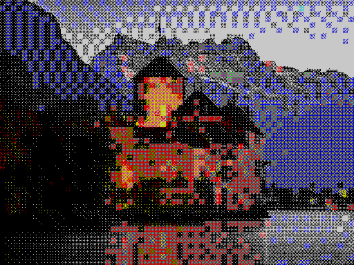
ZXPAL0 with --diffuse 0.5: error 22.99, against
32.72 for the reference encoder. A cell that can't reach a colour passes
the shortfall on to its neighbours, so areas average closer to the
photograph.
In ZXPAL4, the same flag takes Chillon from 7.03 to 6.12. The output is an ordinary screen, so nothing downstream changes.
--penalty p adjusts the reference encoder itself. Each
pair's score adds a penalty on the distance between its two colours, so
that a cell prefers close colours over a wide dither. The reference
weight is 0.204. For Chillon in ZXPAL2, 0.1 gives 19.30 and 0.4 gives
20.10, against 17.89 at the reference weight. The output is still a
screen.
The specification chose its palettes by encoding pictures with
candidate colour sets and measuring the result. zx can run
the same kind of experiment. The output is then a PNG to look at and
measure, not a screen, because no ZXMODE file holds these colours or
cell sizes.
Colour banks. --banks file.csv encodes
over any colours instead of a palette's. The file has one row per
colour, with columns bank, r, g
and b (or hex), and each cell takes its two
colours from one bank. Without a bank column, every colour
is in one bank, which is how ZXPAL3 and ZXPAL4 work.
zx scr palette --banks writes a palette's banks in the
order the encoder uses, as a starting point. Encoding over that file
gives the palette's own encoding, pixel for pixel.
zx scr palette zxpal2 --banks -o zxpal2-banks.csv
zx scr encode chillon-fit.png --mode zxmode2 --banks zxpal2-banks.csv -o check.pngCell sizes. --cell WxH encodes with
cells of another size, which must divide the picture.
--cell 4 means 4x4. A 4x4 cell dithers against the 4x4
Bayer matrix. Other sizes dither against the 8x8 matrix laid over the
whole picture, as the specification's tools do.
zx scr encode chillon-fit.png --mode zxmode2 --palette zxpal2 --cell 4 -o chillon2-c4.png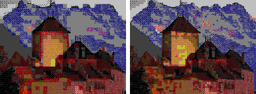
ZXPAL2 with 8x8 cells (left, error 17.89) and 4x4 cells (right, 15.63). Smaller cells need four times the attribute memory, which is why the specification keeps 8x8.
Fitting colours to pictures.
zx scr fitregs is the specification's register search. It
adds --add n colours to ZXPAL3, ZXPAL4 or a one-bank table,
chosen so that the pixels of the given pictures lie nearer to some
colour:
It writes the base and the new colours as one bank, for
encode --banks:
$ zx scr fitregs --palette zxpal3 --add 16 -o zxpal3-16.csv melons.png moravian.png tunisian.png runner.png uzbek.png
wrote zxpal3-16.csv (80 colours: 64 + 16 fitted to 5 picture(s))
sample distance to the nearest colour: mean 33.60 -> 17.52, share over 50: 0.227 -> 0.008
$ zx scr encode chillon-fit.png --mode zxmode2 --banks zxpal3-16.csv -o chillon3-16.pngThe pictures are used as they are, so fit them first with
zx scr fit. Colours fitted to a picture flatter that
picture, so test on pictures the colours were not fitted to, as here:
Chillon is not among the five.
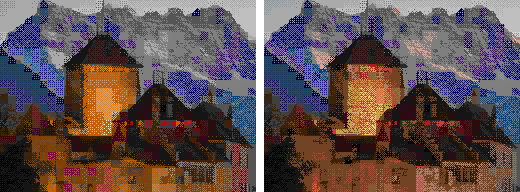
ZXPAL3 (left, error 10.72) and ZXPAL3 plus 16 colours fitted to five other pictures (right, 9.39). The fitted colours are the muted ones a rule-built hue wheel lacks.
Run as the specification ran it, on its ten development pictures in two folds of five, with each fold encoded using colours fitted to the other:
| Colours | ZXPAL3 | +8 | +16 | +32 | +48 |
|---|---|---|---|---|---|
zx scr fitregs |
13.16 | 10.14 | 9.23 | 8.58 | 7.95 |
| the specification (Part 3, section 17) | 13.16 | 10.28 | 9.42 | 8.47 | 7.91 |
This is the finding behind ZXPAL4. Fitted colours showed which muted
colours were missing, and ZXPAL4 adds such colours by rule rather than
from data. fitregs makes its random draws from a fixed seed
(--seed), so a fit repeats exactly. Its colours differ from
those of the specification's Python script, which draws differently.
With fit, encode and compare,
zx can recompute the specification's results table,
data/results_by_palette.csv, without Python. For each
picture, fit it as pictures/README.md says (trim and
centring), add --grey for the grey half of the table,
encode it in each palette, and measure:
zx scr fit melons.jpg --resize fill --filter lanczos --centering 0.5,0.7 -o melons-fit.png
zx scr encode melons-fit.png --mode zxmode2 --palette zxpal3 -o melons3.zm2
zx scr compare --metric blur melons-fit.png melons3.zm2 --palette zxpal3Over the whole table (44 pictures, colour and grey, five palettes), 118 of the 220 values come out equal to two decimals, and none differs by more than 0.03. The fit, the encoder and the error measure are exact. The remaining difference is JPEG decoding: Go's decoder and libjpeg-turbo round a few per cent of their inverse-DCT values 1 to 3 levels apart. The register tracks this as T-08. From PNG copies of the same pixels, the fit and the encodings match byte for byte.
All the commands here are zx scr subcommands. The full
flag reference is in the CLI manual, and the
library API in the library manual.
Points that are easy to miss:
--palette gives
a wrong picture, not an error, whenever the sizes agree (ZXPAL0, ZXPAL1
and ZXPAL2 share a size, as do ZXPAL3 and ZXPAL4). Keep the palette in
the file name, or keep the picture in a .cut collection,
which records both.zx scr encode without --mode,
--palette or --registers works as it always
has: it posterises first, which turns normal colours into bright ones.
With --palette zxpal0, the reference encoder keeps
both.--diffuse, --flat and
--linear-pairs work on 8x8 cells of a real palette, so they
are refused with --banks or --cell.
--penalty works with both.palette --banks writes them in that order, so encoding over
the written file reproduces the palette exactly. A register table
(palette -o) is in register order instead. Read as banks,
it gives one bank in that order, so the rare tied cell can resolve
differently.